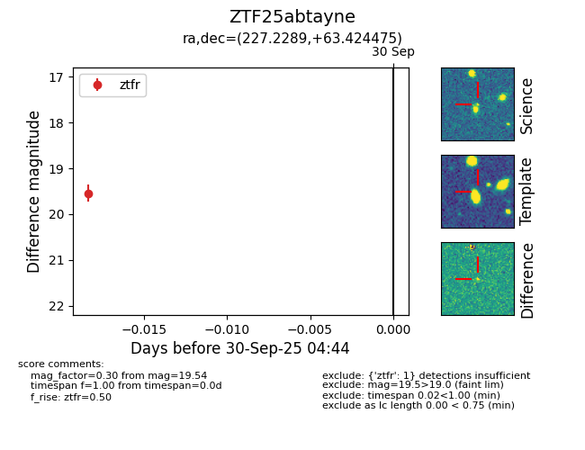

FINK: ZTF25abtayne
Lasair: ZTF25abtayne
ALeRCE: ZTF25abtayne
ZTF25abtayne (ztf,fink)
equatorial (ra, dec) = (227.2289,+63.42448)
galactic (l, b) = (101.0105,+47.43024)

last ztfr=19.54
1 ztfr detections